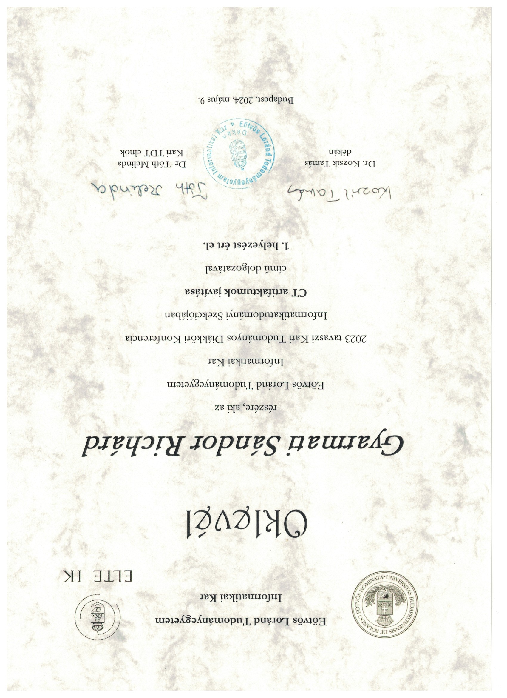

Welcome
Medior Backend Engineer specialized in .NET (C#) and SQL Server, passionate about problem-solving, software architecture, and continuous learning. Holds an MSc in Computer Science with a strong mathematical background, awarded for research in Computed Tomography; also an avid chess and volleyball player.
Curriculum Vitae
Personal Information
Name: Sándor Richárd Gyarmati
Location: Budapest, Hungary
Email: gyarmatisandorrichard@gmail.com
Education
Computer Science MSc
Spec: mathematical modelling. Thesis: Computed Tomography artifact reduction • 1st prize at TDK  . Matlab, Fourier analysis, stochastic processes, differential equations, signal and image processing, advanced computer graphics.
Computer Science BSc
Member of Neumann Talent Development Program. Spec: mathematical modelling. Thesis: Software-Defined Wide Area Network. Algorithms, computer graphics, special courses of Competitive programming.
Work Experience
Medior Software Engineer
- Supporting team delivery by handling backend integrations and bug fixes across multiple services
- Built a webhook-based integration with an internal AI Service (using Claude) to summarize user documents
- Led the refactoring of the AI pipeline and integrated the Durable Task Framework to eliminate redundant operations, improving content generation time and reducing resource usage
- Maintained CI/CD pipelines via GitHub Actions, Helm, Octopus; configured releases and deployments
- Built custom Grafana dashboards to monitor long-running jobs and visualize failure rates
Software Engineer
- Developed .NET services managing embedded AWS dashboards with access control and sharing functionality
- Implemented a pull-based sync mechanism to align local state with remote AWS API under strict legal constraints
- Co-mentored an intern: task planning, code reviews, and backend onboarding; intern later hired full-time
- Worked on various backend tasks, while constantly learning about backend development
Intern
- Built and extended .NET API endpoints; code shipped to production within second month. Working in scrum
- Automated Excel-to-Word workflows for HR using VBA macros due to policy constraints
- Participated in company trainings on Scrum, soft skills, and engineering practices
- Offered full-time position after a successful assessment
Student Developer
- Built a Python CLI tool to automate firewall and router setup (Juniper, Ericsson) for 5G demo environments
- Supported SDN-based network setups for Edge Computing in internal research projects
- Gained experience in L3/L4 networking concepts and automation of device configurations
- Completed BSc thesis on SD-WAN, using Neo4j to model dynamic network topologies
Skills
Projects
Project 1
Description of your first project. Explain what it does, what technologies you used, and what problems it solves.
Project 2
Description of your second project. Explain what it does, what technologies you used, and what problems it solves.